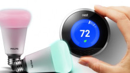

Google Nest
An itibariyle Recode tarafýndan paylaþýlan habere göre Google, dünyanýn ilk öðrenen akýllý termostatýný üreten ve internet of things (IoT) dünyasýnýn örnek gösterilen giriþimlerinden biri olan Nest’i 3.2 milyar dolara satýn aldý. Firma kýsa süre önce de akýllý termostatýn yanýna duman dedektörü dahil ederek ürün gamýný geniþletmiþti. Webrazzi Summit 2012’ye katýlanlar Nest’in ilk yatýrýmcýsý Shasta Ventures’ýn kurucusu Rob Coneybeer’i ve donaným dünyasýndaki geliþmelere dikkat çektiðini konuþmasýný hatýrlayacaklardýr. Nest’in Shasta Ventures dýþýnda yatýrýmcýlarý arasýnda Google Ventures ve Kleiner Perkins da bulunuyordu. Þirket kýsa süre önce 150 milyon dolarlýk yeni bir yatýrým alacak þeklinde duyumlar vardý ve deðerlemesi 2 milyar dolar olarak konuþuluyordu.
